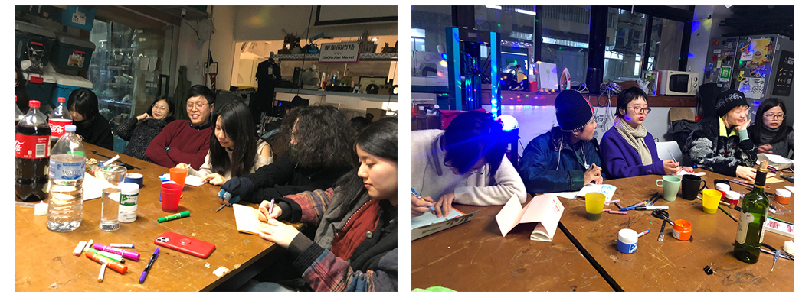
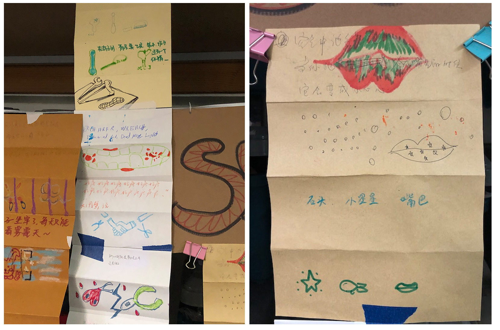
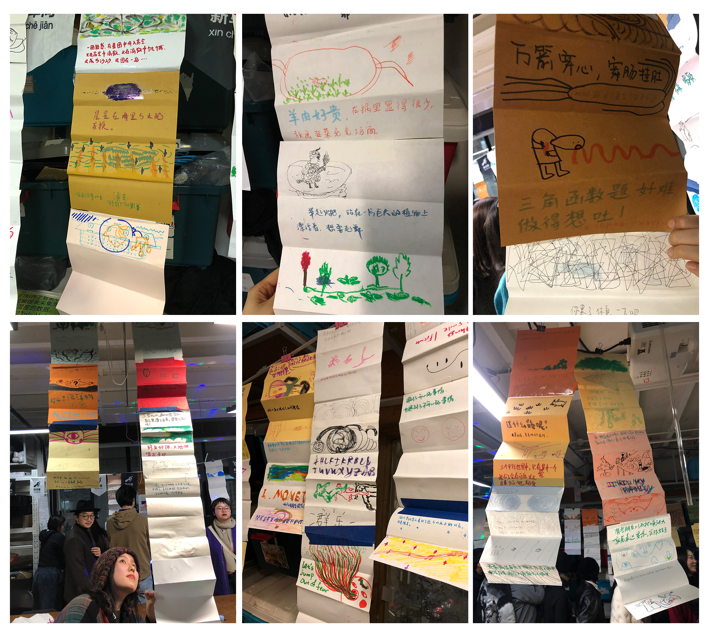
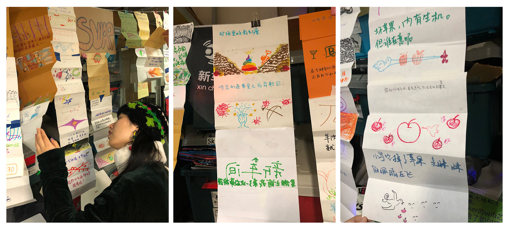

✺ Back
I have ran story telephone multiple times in my classes as a warm-up activity for students to get loosen up for activities that need to be anticipated through divergent thinking. This activity is similar to gestural drawing I did as a students back in college, which figure drawings were being made in multiple 1 minute sittings, to get warmed up for a long painting session. I have hosted a story telephone workshop at Xinchejian (a makerspace in downtown Shanghai) in December 2020, opening this event to the public.Here are the rules for Story Telephone:Form a circle with all participants.Every participant will get a piece of paper when joining the circle.At the start of the story telephone, everyone writes down a sentence on top of the paper.
Then, everyone folds part of the paper with the sentence inward, passing it to the person sitting on the right.Everyone will response to the sentence through drawing. Once the drawing is finished, fold the part of the paper with the drawing inward, passing it to the person sitting on the right.Every time when someone new joins the circle, a new story would begin. Similarly, when someone leaves, one story would come to an end.A Story Telephone can be ran anywhere, with minimum of three people. More participants is strongly recommended. I often do this activity with more than ten people. When I did a Story Telephone night at Xinchejian, at least thirty people came. The activity can be conducted from ten minutes to two hours (or more, if your participants have the spam of attention). Any writing and drawing medium is welcomed, but fast drying and immediate (meaning the speed of mark-making: pen verses sewing) mark-making medium is recommended. 
Back